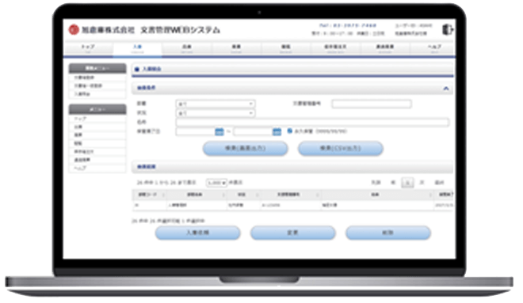

WEB System
Orders are placed through the Web System.

(1) Access the dedicated website from the Asahi Warehouse website
(2) Log in with customer-specific ID and password
(3) Each order can be requested from the web screen.
(4) After receiving your order, you will be notified of its receipt by an auto-reply e-mail.
(2) Log in with customer-specific ID and password
(3) Each order can be requested from the web screen.
(4) After receiving your order, you will be notified of its receipt by an auto-reply e-mail.
List of WEB System Functions
| View Inventory Data | A list of the document box inventory stored at Asahi Warehouse is available for viewing on the screen. |
|---|---|
| CSV Data Download | You can download the inventory list of items being stored as CSV data to use for internal documentation. |
| Storage request (depositing into the warehouse) | You can submit a new document box storage request to Asahi Warehouse. |
| Request for delivery (pickup from warehouse) | You can arrange for the withdrawal (delivery) of document boxes entrusted to Asahi Warehouse. |
| Order for document storage box (empty box) | You can place an order for document storage boxes (empty boxes) (orders are in increments of 10). |
| Request to use viewing quality | You can make a request to use the reading room located in the Itabashi Sales Office. |
| Disposal request (inventory destruction) | You can request the disposal (dissolution) of document boxes deposited at Asahi Warehouse regardless of the storage period. |
| Disposal request (destruction in transit) | You can request a pickup of document boxes to be disposed of (dissolved) without storage (pickup at the same time as receiving). |